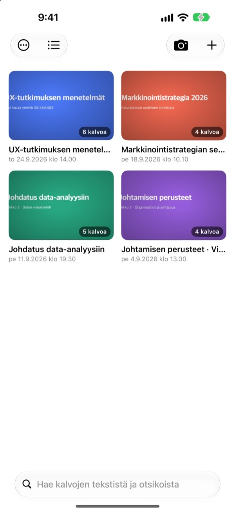
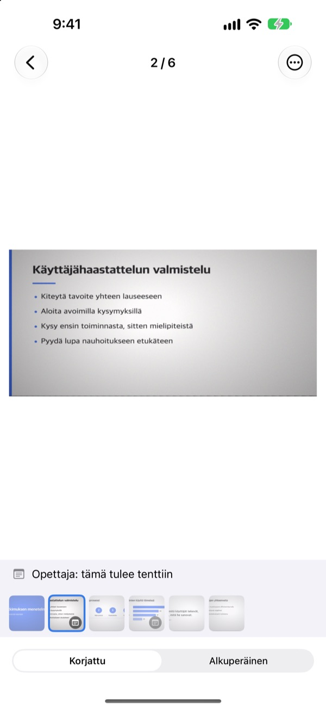
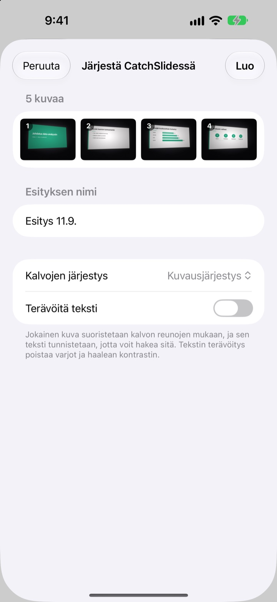
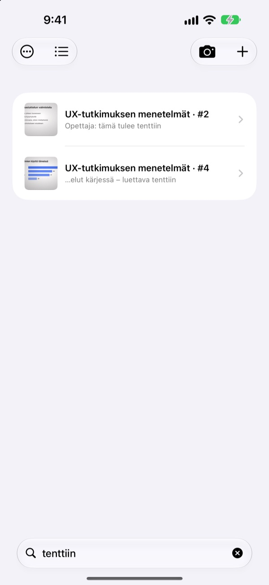

Kuvattu sivusta.
Tallennettu edestä.
Kamera löytää kalvon kaikki neljä kulmaa, oikaisee sen ja rajaa ympäristön pois. Peräkkäin kuvaamasi kalvot päätyvät samaan esitykseen.
Yksi ostos, kaikki ominaisuudet. Ei tilausta, ei tiliä.

Oikaise itse
Tämä kuva on otettu vinosti luentosalin sivupaikalta. Vihreä reunus näyttää, mistä kalvon kulmat löytyivät.
Avasitko kuvat kertausta varten etkä löytänyt kalvoa?
Takarivistä kuvatut kalvot ovat aina vinossa ja hukkuvat selfieiden ja kuittien sekaan. Hiljaisessa luentosalissa jo suljinääni saa epäröimään. CatchSlide kuvaa äänettömästi, oikaisee jokaisen kalvon ja pitää ne yhdessä esityksittäin.
Suora heti kuvatessa
Kamera seuraa kalvon neljää kulmaa reaaliajassa ja muuttuu vihreäksi, kun se löytää ne. Vinostakin kuvattu kalvo oikaistaan kuin edestä otetuksi, ja tausta rajataan pois.
Ei suljinääntä. Kun Automaattinen kuvaus on päällä, jokainen uusi kalvo kuvataan itsestään ja tärähtäneet kuvat ohitetaan.

Vanhat kuvat kerralla
Valitse Kuvat-sovelluksesta useita luentokuvia ja jaa ne CatchSlideen. Ne oikaistaan ja tallennetaan yhdeksi esitykseksi siinä järjestyksessä, jossa otit ne.Terävöitä teksti poistaa varjot ja haalean kontrastin.

Yksi sana riittää
CatchSlide lukee jokaisen kalvon tekstin suoraan laitteella. Viikkojenkin päästä yksi muistamasi sana vie oikean kalvon luo.
Myös kalvoihin lisätyt muistiinpanot ovat haettavissa. Merkitse muutama sanalla tentti, niin koko tenttialue löytyy yhdellä haulla.

Alkuun kolmessa vaiheessa
- 1
Avaa kamera
Luettelon kamerapainikkeesta, Koti-valikon widgetistä tai lukitusnäytöltä.
- 2
Rajaa kalvo kuvaan
Kun kulmat muuttuvat vihreiksi, ota kuva tai anna automaattisen kuvauksen hoitaa se.
- 3
Kertaa esityksittäin
Hae, lisää muistiinpanoja ja vie PDF kertausta varten.
Mitä esityksellä voi tehdä
- Äänitys
- Äänitä kuvatessasi ja kuuntele jokainen kalvo siitä hetkestä, jolloin kuvasit sen
- Litterointi
- Muuttaa äänityksen tekstiksi, näyttää mitä kunkin kalvon kohdalla sanottiin ja on mukana haussa
- Tekoälytiivistelmä
- Tiivistää esityksen kalvojen tekstistä ja litteroinnista (iOS 26 tai uudempi laitteissa, jotka tukevat Apple Intelligencea)
- Kertausmoniste, jossa yksi, kaksi tai neljä kalvoa sivulla
- Markdown
- .zip, joka käy suoraan Notioniin tai Obsidianiin
- PowerPoint
- Vie .pptx-tiedoston, ja litterointi tulee puhujan muistiinpanoihin
- Yhdistäminen
- Valitse useita esityksiä ja yhdistä ne yhdeksi
- iCloud-synkronointi
- Kun se on päällä, näet esitykset myös muilla saman Apple ID:n laitteilla. Oletuksena pois päältä
- Widgetit
- Avaavat kameran suoraan Koti-valikosta tai lukitusnäytöltä
Tekstintunnistus, litterointi ja tekoälytiivistelmät tehdään laitteella.
Osta kerran, saat kaiken
CatchSlide
- Äänetön kuvaus, automaattinen kuvaus ja oikaisu
- Useiden kuvien tuonti kerralla Kuvat-sovelluksesta
- Kalvot esityksittäin, haku tekstistä ja muistiinpanoista
- Äänitys, litterointi ja tekoälytiivistelmä
- Vienti PDF-, Markdown- ja PowerPoint-muotoon
- iCloud-synkronointi ja widgetit
Tippi (vapaaehtoinen)
- Jos sovelluksesta on sinulle apua, voit antaa kehittäjälle pienen tipin
- Tippi ei avaa mitään. Kaikki ominaisuudet toimivat ilmankin
Löydät sen Omat tiedot -näkymästä.
Ei tilausta eikä maksullisia lisäominaisuuksia. Katso hinta omassa maassasi App Storesta.
Usein kysyttyä
Miten kuvaan kalvon?
Avaa kamera ja rajaa kalvo kuvaan. Kun kulmat muuttuvat vihreiksi, paina laukaisinta. Kun automaattinen kuvaus on päällä, seuraava kalvo kuvataan itsestään aina kalvon vaihtuessa.
Kuuluuko suljinääni?
Ei. Kuva tallennetaan suoraan kameranäkymästä, joten kuvaus on äänetöntä kaikissa maissa.
Miksi kuvani ovat samassa esityksessä?
Jos otat seuraavan kuvan alle 5 minuutin kuluttua edellisestä, se kuuluu samaan esitykseen. Napauta otsikkoa luettelossa nimetäksesi sen uudelleen, ja yhdistä erilleen jääneet esitykset toiminnolla Yhdistä esitykset.
Voinko lisätä jo ottamiani kuvia?
Voit. Valitse ne Kuvat-sovelluksessa ja jaa CatchSlideen, tai napauta luettelossa ＋ ja valitse Tuo Kuvat-sovelluksesta. Ne oikaistaan ja tallennetaan yhdeksi esitykseksi kuvausjärjestyksessä.
Kulmat tunnistettiin väärin.
Avaa kalvo, valitse ⋯-valikosta Säädä kulmat ja vedä neljä kulmaa paikoilleen. Tunnista automaattisesti etsii ne uudelleen, ja Koko kuva käyttää koko valokuvaa. Alkuperäinen säilyy aina, joten voit tehdä oikaisun uudelleen milloin vain.
Voinko hakea kalvojen tekstistä?
Kirjoita sana luettelon yläreunan hakukenttään. Haku kattaa kalvojen tekstin, esitysten otsikot, muistiinpanot ja litteroinnit ja vie suoraan oikeaan kalvoon. Tekstintunnistus tehdään laitteella.
Miten vien PDF:n?
Avaa esityksessä jakovalikko, valitse Vie PDF-tiedostona ja valitse yksi, kaksi tai neljä kalvoa sivulle. Jakotaulukosta voit tallentaa sen Tiedostoihin tai lähettää toiseen sovellukseen.
Miten muutan järjestystä tai poistan kalvoja?
Pidä esityksessä kalvoa painettuna ja vedä se uuteen kohtaan. Samasta valikosta voit poistaa tai jakaa kalvon, ja Valitse poistaa useita kerralla.
Miten äänitys ja tekoälytiivistelmä toimivat?
Laita kameran yläreunasta Äänitä päälle, niin jokaiseen kalvoon tallentuu sen hetken ääni. Kohdassa Esityksen muistiinpanot toiminto Tiivistä tekoälyllä tekee tiivistelmän kalvojen tekstistä ja litteroinnista. Se vaatii iOS 26:n tai uudemman laitteessa, joka tukee Apple Intelligencea.
Mihin kalvoni ja äänitykseni tallentuvat?
Laitteellesi. Ne siirtyvät omaan iCloudiisi vain, jos laitat Synkronointi päälle Omat tiedot -näkymässä, eikä tiliä tarvita. Lisätietoja tietosuojakäytännössä.
Kysymyksiä, virheitä tai ideoita? Kirjoita osoitteeseen leeo@kakao.com.